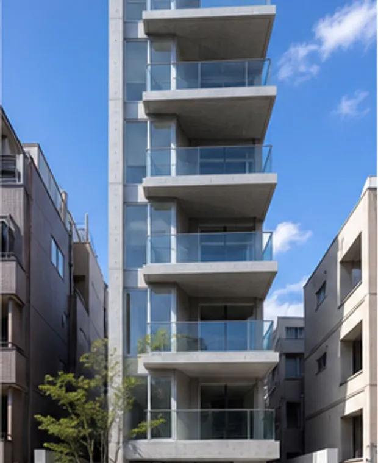
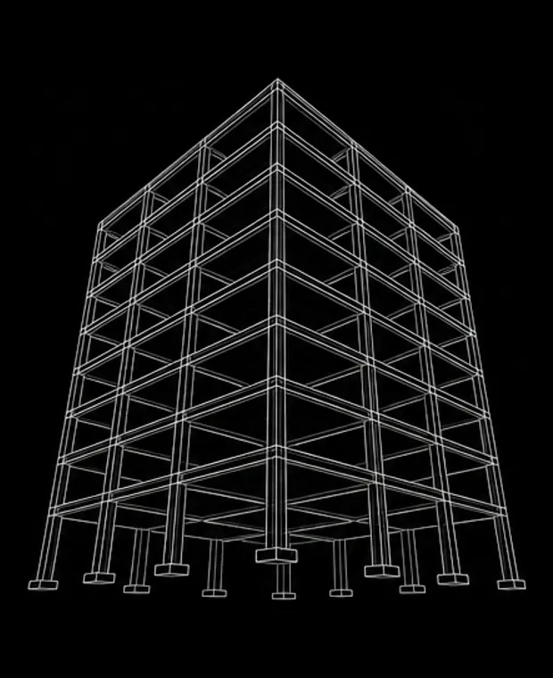
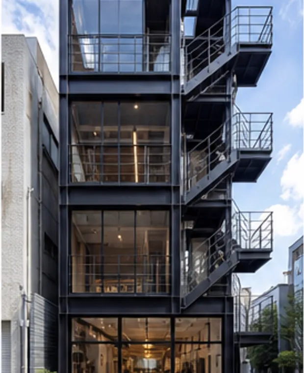
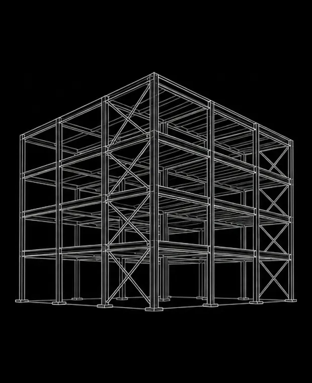
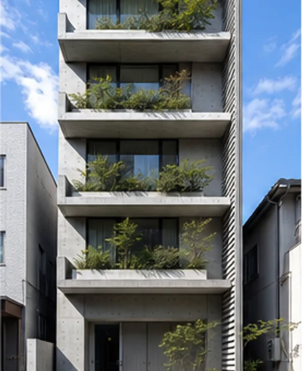
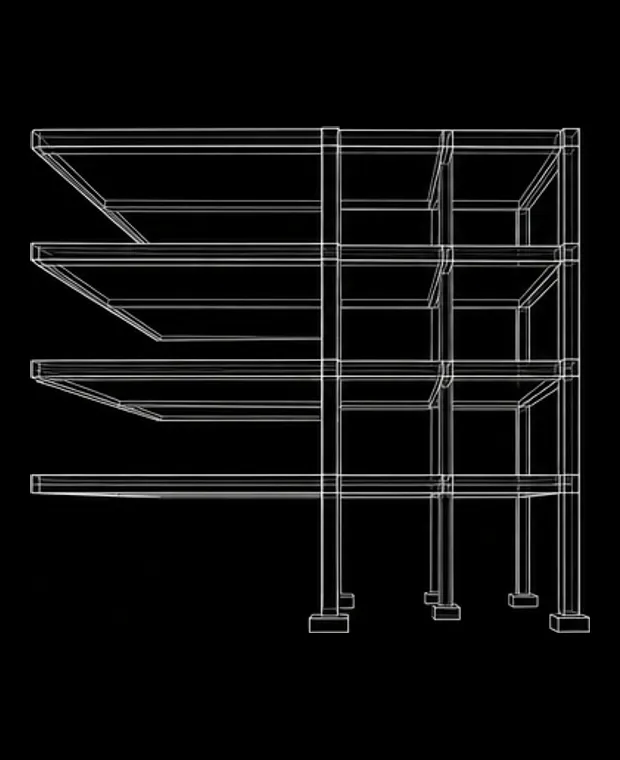
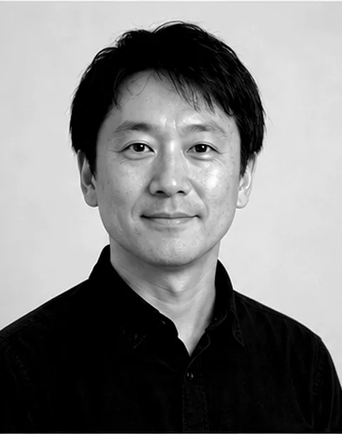
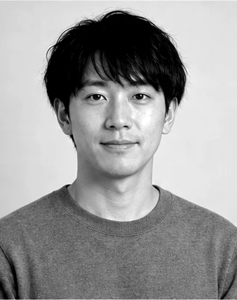

知的好奇心」 実戦的実践」 楽しむこと」 あこがれ
Introduction
YAGURA
Design Alliance
YDA is a structural engineering office that grew into architectural design, so that the frame and the room can be drawn by the same hand.
ヤグラ設計機構は、構造設計から始まった事務所です。骨組みを描くうちに、その骨組みが立つ部屋のことまで考えたくなり、意匠設計まで引き受けるようになりました。
構造と意匠を別々の会社に投げないという、それだけの違いが、図面の速さと建物の素直さを変えていきます。
OurVision
Scroll
スジミチを
カタチに
人の手が触れるところまで
考えぬいた骨組みだけが、
建物を長く支えていく。
Only a frame thought through to the places people touch will hold a building for long.
けれど骨組みは、図面の上だけではまだ何も支えていない。
However, a frame on paper
is not holding anything yet.
However, a frame on paper
is not holding anything yet.
現場で立ち上がって、はじめて
It only begins when it stands on site.
A drawing becomes a building only
when someone has to build it.
図面の上の
structure
が、建物になる
What we do?
Designing the frame and the room
in one office, without handing
either of them over.
意匠と構造は、求められるものが違うという理由だけで、別の会社に分けて発注されることがほとんどです。ヤグラ設計機構はその分け方をやめました。同じ机で、同じ模型を見ながら決めていきます。
柱を1本減らしたいという意匠の希望に、構造がその場で「では梁をこう変える」と返せる。往復のメールが1通も要らない。それだけで、検討できる案の数が何倍にもなります。
Turning the stair core itself into the structure on a 4.2m frontage.
間口4.2mの敷地を、
階段室ごと構造にする


Projects01
Name岩本町SEN
- Year
- 2023
- Place
- 東京都千代田区
- Texture
- RC
Rethinking the roof so that one column could disappear.
柱を1本減らすために、
屋根から考えなおす


Projects02
Name蔵前TSUGI
- Year
- 2026
- Place
- 東京都台東区
- Texture
- STEEL
A three-storey timber frame with no visible connectors.
木造3階建てを、
金物を見せずに組む


Projects03
Name池尻ハコベヤ
- Year
- 2024
- Place
- 東京都世田谷区
- Texture
- WOOD
知的好奇心Why we do?

YAGURAGISoichi
Structural Engineer / Representative
櫓木 惣一
構造設計一級建築士。図面より先に模型をつくる。事務所に旋盤がある理由をよく聞かれる。
SERIZAWAMinamo
Architect / Design Director
芹沢 みなも
意匠設計。現場に行く回数がいちばん多い。仕上げの相談は大体この人に集まる。

SOGORiku
Structural Engineer
十河 陸
入社4年。解析モデルを組むのが速い。休日は古い橋を見にいっている。
Intellectual curiosity and
practical application.
WHAT FOR YDA?
- 1
秋定 遼一さん
秋定建築設計事務所
櫓木さんは構造の人なのに、こちらの絵の話を先に聞いてくれる。梁を1本動かす相談が、ついでに天井の見え方の相談になる。そういう打合せができる相手はそう多くない
- 2
郡司 由香さん
株式会社コオリ工務店
現場で困ったときの返事が速い。図面の意図を聞くと、その場で手描きが飛んでくる。大工が納得する説明をしてくれるので、施工側としてはとても助かっています
- 3
蓮見 樹さん
株式会社ハスミ不動産
狭小地の話を持っていくと、まず「面白い」と言ってくれる。事業として成立するかどうかまで一緒に考えてくれるので、企画の段階から声をかけています
- 4
苫米地 悠さん
トマベチ都市設計
構造の検討書がとにかく読みやすい。結論だけでなく、どこで悩んだかが書いてある。審査に出すときの安心感がまるで違います
- 5
早乙女 律さん
株式会社サオトメ建設
見積が出しやすい図面を描いてくれる。特殊な納まりを使うときは必ず先に相談がくる。段取りが崩れないので、工程が読める
- 6
志度 明彦さん
株式会社シド設備
設備のルートを最初から見込んで梁を割ってくれる数少ない事務所。あとから穴をあける相談が要らないのは、本当にありがたい
- 7
万代 千聡さん
合同会社バンダイワークス
はじめて一緒に組んだとき、模型を3つ持ってきたのに驚きました。選ばせるのではなく、考え方を見せてくれる。仕事の楽しさが伝わってきます